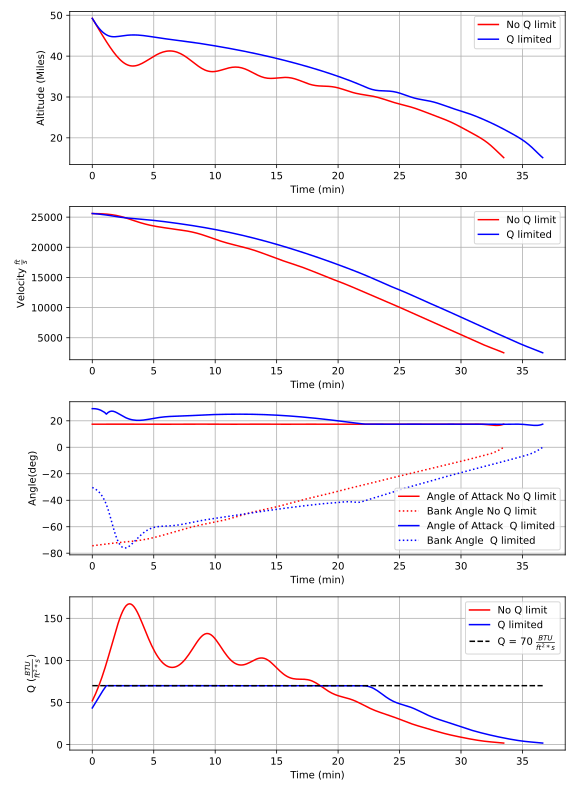

Space Shuttle Reentry#
As a next example, we will solve a classic real world problem outlined by Betts in [ref]. This problem involves maximizing the glide range of the Space Shuttle during reentry. The dynamics are written in spherical coordinates and incorporate gravity and an empirical model for the lift and drag characteristics of the shuttle. The controls are the angle of attack and bank angle of the vehicle and the objective is to maximize the final latitude subject to the initial and terminal conditions given in eqY.
Using this, model, to maximize the glide range, it is sufficient to maximize \(\theta(t_f)\), which we will do by minimizing \(-\theta(t_f)\). Similar to Betts, we examine the solution to this problem both with and without a path constraint on wing leading edge heating rate, \(q\).
The initial and terminal values of the state variables for this problem are given below.
As we have mentioned previously, solving problems in standard units (Miles,Km, fps etc.) is typically very ill conditioned and degrades the performance of an otherwise well posed problem. Therefore, as the first step to solving this problem, we will non-dimensionalize all variables and equations to be of order unity. This is done by defining characteristic length,mass, and time units from which we can define other derived units through dimensional analysis. In this example we select Lstar to be 100,000 feet and tstar to be 60 seconds. Mstar is then set to be the mass of the shuttle. After constructing our derived units, we can simply divide our physical constants by the appropriate unit to get their non-dimensional value.
g0 = 32.2
W = 203000
Lstar = 100000.0 ## feet
Tstar = 60.0 ## sec
Mstar = W/g0 ## slugs
Vstar = Lstar/Tstar
Fstar = Mstar*Lstar/(Tstar**2)
Astar = Lstar/(Tstar**2)
Rhostar = Mstar/(Lstar**3)
BTUstar = 778.0*Lstar*Fstar
Mustar = (Lstar**3)/(Tstar**2)
Re = 20902900 /Lstar
S = 2690.0 /(Lstar**2)
m = (W/g0) /Mstar
mu = (0.140765e17) /Mustar
rho0 =.002378 /Rhostar
h_ref = 23800 /Lstar
a0 = -.20704
a1 = .029244
b0 = .07854
b1 = -.61592e-2
b2 = .621408e-3
c0 = 1.0672181
c1 = -.19213774e-1
c2 = .21286289e-3
c3 = -.10117e-5
Having Non-dimensionalized our constants, we can now write the EOM’s as an ode_x_u object as we have done in previous examples. For this model, there are five state variables \((h,\theta,v,\gamma,\psi)\) and two control variables \((\alpha,\beta)\).
class ShuttleReentry(oc.ode_x_u.ode):
def __init__(self):
############################################################
args = oc.ODEArguments(5,2)
h = args.XVar(0)
theta = args.XVar(1)
v = args.XVar(2)
gamma = args.XVar(3)
psi = args.XVar(4)
alpha = args.UVar(0)
beta = args.UVar(1)
alphadeg = (180.0/np.pi)*alpha
CL = a0 + a1*alphadeg
CD = b0 + b1*alphadeg + b2*(alphadeg**2)
rho = rho0*vf.exp(-h/h_ref)
r = h + Re
L = 0.5*CL*S*rho*(v**2)
D = 0.5*CD*S*rho*(v**2)
g = mu/(r**2)
sgam = vf.sin(gamma)
cgam = vf.cos(gamma)
sbet = vf.sin(beta)
cbet = vf.cos(beta)
spsi = vf.sin(psi)
cpsi = vf.cos(psi)
tantheta = vf.tan(theta)
hdot = v*sgam
thetadot = (v/r)*cgam*cpsi
vdot = -D/m - g*sgam
gammadot = (L/(m*v))*cbet +cgam*(v/r - g/v)
psidot = L*sbet/(m*v*cgam) + (v/(r))*cgam*spsi*tantheta
ode = vf.stack([hdot,thetadot,vdot,gammadot,psidot])
##############################################################
super().__init__(ode,5,2)
Additionally, we can express our heating rate constraint as an asset vector function for later use in the solution process.
def QFunc():
h,v,alpha = Args(3).tolist()
alphadeg = (180.0/np.pi)*alpha
rhodim = rho0*vf.exp(-h/h_ref)*Rhostar
vdim = v*Vstar
qr = 17700*vf.sqrt(rhodim)*((.0001*vdim)**3.07)
qa = c0 + c1*alphadeg + c2*(alphadeg**2)+ c3*(alphadeg**3)
return qa*qr
Next we must define a suitable initial guess for the optimization. Bett’s problem definition places an upper limit of 2500sec on this problem, so we will assume an initial guess of slightly less than this value (tf=1800 sec). We are given initial and terminal values of the altitude,velocity, and gamma, so it is natural to construct to the initial guess for these state variables linear functions over the interval (0,tf).For theta we only have an initial condition, so we assume that it’s final value is proportional to the integral of the velocity divided by the radius of the Earth and then interpolate linearly. Psi is also only given an initial value and we have no good physical intuition for how it will evolve so our initial guess assumes that it is constant. For both controls, we just assume that they are 0.
tf = 1800/Tstar
ht0 = 260000/Lstar
htf = 80000 /Lstar
vt0 = 25600/Vstar
vtf = 2500 /Vstar
thetatf = (vt0*tf + 0.5*(vtf-vt0)*tf)/Re
gammat0 = np.deg2rad(-1.0)
gammatf = np.deg2rad(-5.0)
psit0 = np.deg2rad(90.0)
ts = np.linspace(0,tf,200)
TrajIG = []
for t in ts:
X = np.zeros((8))
X[0] = ht0*(1-t/tf) + htf*t/tf
X[1] = thetatf*t/tf
X[2] = vt0*(1-t/tf) + vtf*t/tf
X[3] = gammat0*(1-t/tf) + gammatf*t/tf
X[4] = psit0
X[5] = t
X[6] =.00
X[7] =.00
TrajIG.append(np.copy(X))
With preliminaries completed we can now solve the problem. We first construct our ode and phase object, and use a 64 LGL3 segments to discretize the problem. We then enforce our known initial conditions as a boundary value constraint at PhaseReg.Front. Next, we apply the given bounds on our states and controls as path constraints and also place the specified upper bound on the final time. Last, we enforce the terminal conditions on altitude velocity and blank at the back of the trajectory, and then specify that the objective is to minimize deltatheta*-1. This is equivalent to maximizing deltatheta. Given our rather poor initial guess for this problem, PSIOPT is invoked in solve_optimize mode, so that it first finds a feasible solution satisfying all constraints before minimizing the objective. Furthermore, we enable the line-search during the optimize phase as an extra safe-guard.
ode = ShuttleReentry()
phase = ode.phase("LGL3",TrajIG,64)
phase.addBoundaryValue("Front",range(0,6),TrajIG[0][0:6])
phase.addLUVarBounds("Path",[1,3],np.deg2rad(-89.0),np.deg2rad(89.0),1.0)
phase.addLUVarBound("Path",6,np.deg2rad(-90.0),np.deg2rad(90.0),1.0)
phase.addLUVarBound("Path",7,np.deg2rad(-90.0),np.deg2rad(1.0) ,1.0)
phase.addUpperDeltaTimeBound(tmax,1.0)
phase.addBoundaryValue("Back" ,[0,2,3],[htf,vtf,gammatf])
phase.addDeltaVarObjective(1,-1.0)
phase.optimizer.set_OptLSMode("L1")
phase.optimizer.MaxLSIters = 1
phase.optimizer.MaxAccIters = 100
phase.optimizer.PrintLevel = 1
phase.solve_optimize()
phase.refineTrajManual(256)
phase.optimize()
Traj1 = phase.returnTraj()
phase.addUpperFuncBound("Path",QFunc(),[0,2,6],Qlimit,1/Qlimit)
phase.optimize()
Traj2 = phase.returnTraj()
Plot(Traj1,Traj2)
For this problem, PSIOPT is able to find a feasible solution in 13 iterations of the solve algorithm, and then an optimum solution after another 66 iterations in the optimize algorithm. We then refine the trajectory to a higher number of segments and re-optimize the solution, which converges in only 4 iterations. The total run-time (i9-12900k) is 70ms. The final objective value for delta theta is 34.141 degrees, which is exactly that given by Betts in [ref]. Next we add the path constraint on leading edge heating rate to the phase and optimize the new problem using the previous solution as the initial guess. Owing to the excellent initial guess, the heat rate limited problem converges in another 16 iterations. The additional of the constraint reduces the maximum glide range of the shuttle to 30.631 radians. A plot of the converged state and control histories for both problem formulations can be seen below.
The complete code for this example is listed at the bottom of this page.
{kind=link}